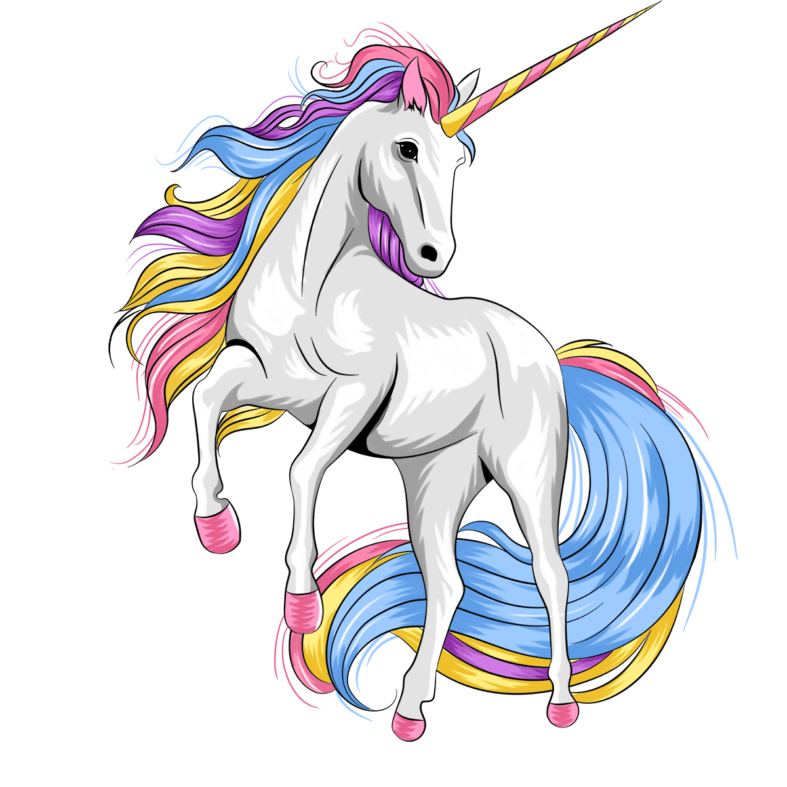

Anwendungsfälle entdecken

Dein KI-gestützter persönlicher Assistent
- E-Mail-Entwurf auf Basis deines Tones
- Vorbereitung und Planung von Meetings
- Tagesplan-Optimierung nach Prioritäten
- Intelligente Projektplanung
- Automatisierte Workflows
- Intelligente Kalender-Funktionen
- Automatisierte Notizen und Zusammenfassungen
- Verbinde deine Lieblings-Tools mit KI
Projektmanagement
-
 KI Projektmanager
KI Projektmanager
Plane und verwalte Projekte automatisch
-
 KI Gantt-Diagramm
KI Gantt-Diagramm
Visualisiere Projekte über die Zeit mit Auto-Planung
-
 KI Workflows
KI Workflows
Automatisiere wiederkehrende Projekte und SOPs
Zeitmanagement
-
 KI Task-Manager
KI Task-Manager
Organisiere und priorisiere deine Aufgaben
-
 KI Kalender
KI Kalender
Plane deinen Tag automatisch mit intelligenter Zeitplanung
-
 KI Meeting-Assistent
KI Meeting-Assistent
Vereinfache die Meetingplanung und Buchungs-Links
Wissensmanagement
-
 KI Chat
KI Chat
Der schnellste Weg von der Frage zur Lösung
-
 KI Meeting-Notizblock
KI Meeting-Notizblock
Automatische Erfassung von Meeting-Notizen und Zusammenfassungen
-
 KI Dashboards
KI Dashboards
Verfolge den Projektfortschritt in einer Ansicht
-
 KI Docs-Assistent
KI Docs-Assistent
Hilf beim schnelleren Schreiben und Organisieren von Dokumenten
Und mehr
-
 KI Sheets
KI Sheets
KI-Intelligenz, Tabellen-Flexibilität und Automatisierungs-Effizienz – kombiniert
-
 Integrationen
Integrationen
Verbinde deine Lieblings-Tools mit Motion